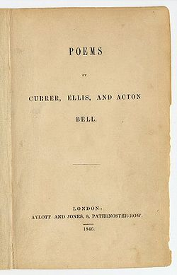

Charlotte, Emily, and Anne Brontë

The first publication for all three Brontë sisters was a self-published book of poetry titled Poems by Currer, Ellis, and Acton Bell. This was published using an inheritance their aunt Elizabeth Branwell left of around £300 each (about £35,000–£40,000 in 2025). This money helped to fund Emily and Charlotte's studies in Brussels, but also a volume of 61 poems. This was prompted by Charlotte's discovery of Emily's hidden poetry collection which she thought had real merit.
The collection was not a success despite many critics today praising Emily's verses in particular. They had published the book in characteristic Brontë style, with anonymous black binding and using a relatively unknown stationery company. The book sold just two copies in its first year available to the public. However, a more well-known publishing house, Smith, Elder & Co., republished the book after the success of the Brontës' later works, with a more attractive cover and binding. Their growing fame led to the book also being published in America in 1848 by Lea and Blanchard of Philadelphia.
Charlotte Brontë (as Currer Bell)
Jane Eyre

Jane Eyre is Charlotte's most famous work. Inspired in part by her time at Cowan Bridge school, in particular the poor conditions and illness, but also her passionate introspective and imaginative nature. It shows a woman with strong morals leaving childhood hardships behind and navigating a complicated love affair with an already married Mr. Rochester. The novel at its heart confronts the meaning of freedom, integrity and self-respect and portrays a woman who comes to understand these virtues on her own terms.
Villette

Literary critics often call Villette Charlotte Brontë's masterpiece. It is the more polished version of her earlier work The Professor. It follows Lucy Snowe, a deeply introspective heroine, as she takes up a position as a teacher in the fictionalised Brussels, known as Villette. It has themes of repression of romantic feelings, religious tension, and a struggle for independence. There are clear parallels with Charlotte's own complicated relationship with Constantin Heger, her mentor and employer while she worked in Brussels.
Emily Brontë (as Ellis Bell)
Jane Eyre
Jane Eyre is Charlotte's most famous work. Inspired in part by her time at Cowan Bridge school, in particular the poor conditions and illness, but also her passionate introspective and imaginative nature. It shows a woman with strong morals leaving childhood hardships behind and navigating a complicated love affair with an already married Mr. Rochester. The novel at its heart confronts the meaning of freedom, integrity and self-respect and portrays a woman who comes to understand these virtues on her own terms.
Anne Brontë (as Acton Bell)
Villette
Literary critics often call Villette Charlotte Brontë's masterpiece. It is the more polished version of her earlier work The Professor. It follows Lucy Snowe, a deeply introspective heroine, as she takes up a position as a teacher in the fictionalised Brussels, known as Villette. It has themes of repression of romantic feelings, religious tension, and a struggle for independence. There are clear parallels with Charlotte's own complicated relationship with Constantin Heger, her mentor and employer while she worked in Brussels.